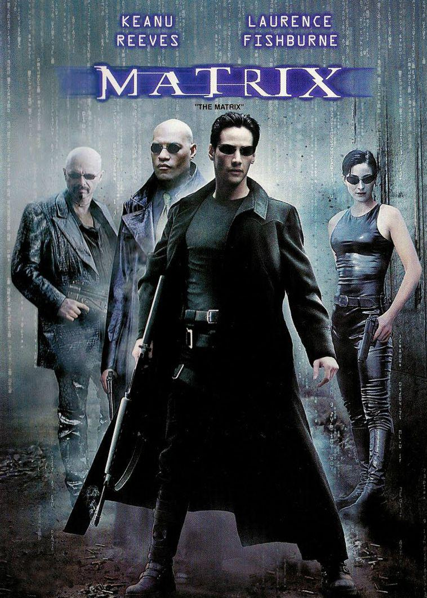

STAR WARS : A ASCENSÃO SKYWALKER
Um fim que, na verdade, é apenas a expansão de um desfecho já visto há muito, muito tempo. Star Wars: A Ascensão Skywalker não só representa a comunhão de oito filmes lançados ao longo de 42 anos como também se propõe a finalizar a história do principal pilar de seu universo cinematográfico: a família Skywalker.
ler mais
PERDIDO EM MARTE
O astronauta Mark Watney (Matt Damon) é enviado a uma missão em Marte. Após uma severa tempestade ele é dado como morto, abandonado pelos colegas e acorda sozinho no misterioso planeta com escassos suprimentos, sem saber como reencontrar os companheiros ou retornar à Terra.
ler mais

MATRIX
Em um futuro próximo, Thomas Anderson (Keanu Reeves), um jovem programador de computador que mora em um cubículo escuro, é atormentado por estranhos pesadelos nos quais encontra-se conectado por cabos e contra sua vontade, em um imenso sistema de computadores do futuro. Em todas essas ocasiões, acorda gritando no exato momento em que os eletrodos estão para penetrar em seu cérebro. À medida que o sonho se repete, Anderson começa a ter dúvidas sobre a realidade.
ler mais
VINGADORES ULTIMATO
Mais do que qualquer filme precedente do Universo Cinematográfico Marvel, Vingadores: Ultimato serve a pensar a maneira como as fantasias de super-heróis representam o nosso medo de lidar com a morte. Os personagens possuem poderes excepcionais, que a princípio garantiriam uma chance de sobrevivência
ler mais
ONDE ESTÁ SEGUNDA
2073. O aumento crescente da população faz com que os recursos naturais da Terra se tornem cada vez mais escassos, especialmente após a América do Sul tornar-se um imenso deserto. A saída é investir em alimentos geneticamente modificados, de forma a ampliar a produção em um espaço físico cada vez mais limitado.
ler mais